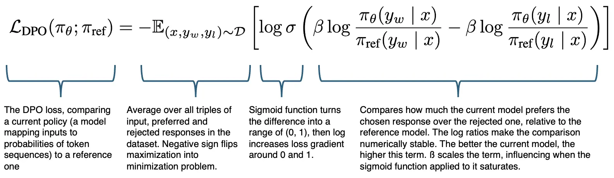

flowchart LR
A[User Input] -->|Prompt| B[Base model]
B -->|Generates| C[Multiple responses]
C -->|Evaluates| D[Human or LLM judge]
D -->|Selects| G[Preferred response]
D -->|Rejects| H[Non-preferred response]
G --> I[DPO training data]
H --> I
I -->|Updates| B
OpenAI recently added the ability to fine-tune their models using direct preference optimization (DPO). They call it preference tuning. Previously, their API only supported supervised fine-tuning (SFT). They join OpenPipe as one of the first pay-per-token APIs to offer DPO. This makes DPO more accessible to developers who don’t want the complexity of managing the training infrastructure themselves. In this article I will briefly introduce DPO and then discuss its use cases in contrast to SFT.
What is DPO?
Skip to the next section if you’re already familiar with DPO.
DPO means training an LLM to conform to the preferences of human raters. Each example contains:
- A user input, e.g. a question
- An ideal assistant reply
- A worse assistant reply
In a training input file, it looks like this:
{
"input": {
"messages": [
{
"role": "user",
"content": "Write a professional email asking for a raise."
}
],
},
"preferred_output": [
{
"role": "assistant",
"content": "I would like to request a salary review. In the past 6 months I have led multiple projects and also assisted colleagues with their tasks."
}
],
"non_preferred_output": [
{
"role": "assistant",
"content": "You should increase my salary because I'm doing all the work here."
}
]
}DPO adjusts the model weights such that it is more likely to choose the preferred answers. It’s graded on how much more likely it is to choose the preferred answer. This teaches it not just to answer more like the preferred answer, but also to avoid answering like the rejected answer. It stands in contrast to SFT, which only teaches it to mimic a single answer.
Loss function
Mathematically, DPO fine-tunes the LLM by maximizing the margin between the probability of the preferred and rejected response. The loss function is:

- \(\pi_\theta(y|x)\): The probability that our model (with parameters θ) assigns to generating response y given input x
- \(\pi_{\text{ref}}(y|x)\): The probability that a reference model (usually the initial pre-trained model) assigns to the same response
- \(y_w\): The preferred, “winning” response
- \(y_l\): The rejected, “losing” response
- \(\beta\): Hyperparameter to regulate the strength of weight updates.
- \(\sigma\): Sigmoid function that maps the difference to a probability between 0 and 1
- \(\mathbb{E}\): Expected value over the dataset D of preferences
- \(\mathcal{D}\): Dataset containing triples of (input, preferred response, rejected response)
See the paper by Rafailov et al. (2023) for details and how this loss is turned into a weight update.
The use of a reference model has two advantages over purely optimizing for a high \(\pi_\theta(y_w|x)\):
- It prevents overfitting to the examples. The derivative of the loss function (see after equation 7 in paper) illustrates that the model gets low weight updates from examples where it already gives more probability to the preferred response.
- It takes into account how likely the preferred and rejected responses are to begin with. So teaching the model to prefer a rare response over another rare response won’t cause an update that breaks common responses.
The choice of \(\beta\) is key. Higher values result in more conservative updates, preserving previous behavior. Lower values cause more aggressive updates in favor of the preferred answer. This stems from the interaction of the sigmoid function: a higher beta causes the function to saturate (approach 1) from smaller differences in the probability ratios, leading to a smaller weight update.
DPO and its predecessor reinforcement learning from human feedback (RLHF) have been a staple in the training of LLMs that serve as assistants, including open models like the Llama 3 family. They are one of the key separators between different models, which share a lot of common SFT in the form of web scraped texts, papers and code. It’s what forms the character and mannerisms of an assistant.
Data for DPO
Collecting DPO data is straightforward. You take the current best model and let it generate multiple answers to a user input at nonzero temperature. Then either a human or a model (a copy of the answering model or a larger, smarter model) judges which answer is superior. This enables a powerful training loop, particularly if an LLM is used as a judge.
When to use DPO?
DPO is best utilized to refine a model that already underwent SFT. By default, OpenAI’s fine-tuning API bundles SFT with DPO by first using SFT to let models learn from the exact wording of the preferred answers before also learning to prefer them using DPO.
1. When prompting isn’t sufficient
If the desired behavior can be achieved by a prompt, you don’t need to implement DPO. Prompts are easier to change and different instances of a model can run with different system prompts. However, prompts add tokens on every call, which makes them slower, more expensive and fills up the context window. They’re also more limited in what behaviors they can achieve and may be ignored by the model. In those cases, DPO is a more robust solution and can of course be be combined with prompts.
2. When you can’t generate optimal answers at scale
Humans typically have an easier time determining which of two answers is better than developing the best answer on their own. This is especially true for complex outputs, multi-turn conversations, and all matters of style where there are multiple acceptable answers. As an example, it’s faster to judge which of two email texts sounds better than writing the perfect email.
3. When you want to preserve previous behavior
DPO is a more measured treatment than SFT and can be regulated with the \(\beta\) hyperparameter. This makes it a good choice if the model is already trained and you only want to make small changes. In contrast, SFT is a more aggressive treatment that overrides previous behavior, for example, a model trained on a named entity recognition task would start speaking JSON rather than English.
Use cases
Let’s consider common LLM use cases and the criteria listed above to decide between SFT+DPO and SFT only.
| Use Case | Method | Reasoning |
|---|---|---|
| Summarization | SFT+DPO | Humans can easily compare summaries for quality, but writing the perfect summary is harder. Multiple valid summaries exist. |
| Code generation | SFT+DPO | Different coding styles and approaches can be valid. Humans can better judge which implementation is more readable/maintainable. SFT can suffice for SQL generation. |
| Question answering | SFT+DPO | Multiple valid answers may exist with varying levels of helpfulness and clarity. Comparing answers is easier than writing the perfect one. |
| Writing assistance | SFT+DPO | Writing quality is subjective and context-dependent. Humans can better evaluate style and tone by comparison. |
| Chatbot responses | SFT+DPO | Natural conversation has many valid responses. Comparing helps optimize for engagement and helpfulness. |
| Information extraction | SFT only | Tasks like text classification, named entity recognition, relationship extraction, web scraping, and others have one correct answer. DPO is unnecessary. |
| Tool calling | SFT only | Unlike code generation, calls to APIs, data fetching functions and similar are limited in variation and a given user request is usually translated into one optimal set of tool calls. |
| Mathematical computation | SFT only | Mathematical problems typically have one correct answer. DPO would be a poor way to teach right and wrong solutions, but may make sense to teach a style of presentation. |
Tasks that fully leverage LLM’s free-form input and output tend to benefit most from DPO.
Further reading
- To see DPO in action, I suggest reading Anyscale’s article Direct Preference Optimization with Synthetic Data which walks through DPO for summarization using synthetic data and LLM as a judge.
- If you want to get started with your own project, I suggest torchtune for training on your own infrastructure and the OpenAI API for a managed service.
- If you want to learn more details about DPO, I suggest reading the paper by Rafailov et al. (2023). There is also a YouTube video of a lecture by one of the authors, Christopher Manning.
- Read about variants of DPO in a blog post on HuggingFace.
Photo by Max Williams on Unsplash